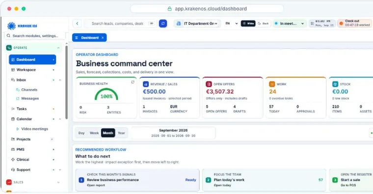
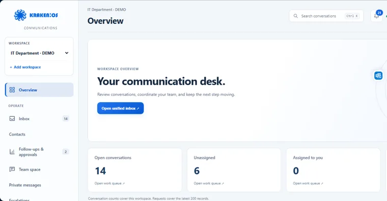
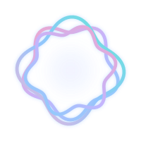

01 / ITD LABS

KRAKEN:OSModular platform
Kraken OS
Customers, work and decisions come together in one platform.
CRMProjectsAccountingWorkspace
Explore productITD LABS
Products and experiments developed within IT Department. Each with a clear purpose and its own identity.

KRAKEN:OSModular platform
Customers, work and decisions come together in one platform.

COMMUNICATIONSCustomer communication
Channels, contacts, team conversations and offers in one platform.

SAY IT. CONSIDER IT HANDLED.Private voice assistant
An assistant designed around how you work: from requests to tasks and meetings.
Images from the product presentation. Available modules and channels depend on configuration, permissions and approved integrations.
AURA / ITD LABS
A private voice assistant that turns requests into tasks and meetings.
Explore productSay it. Consider it handled.